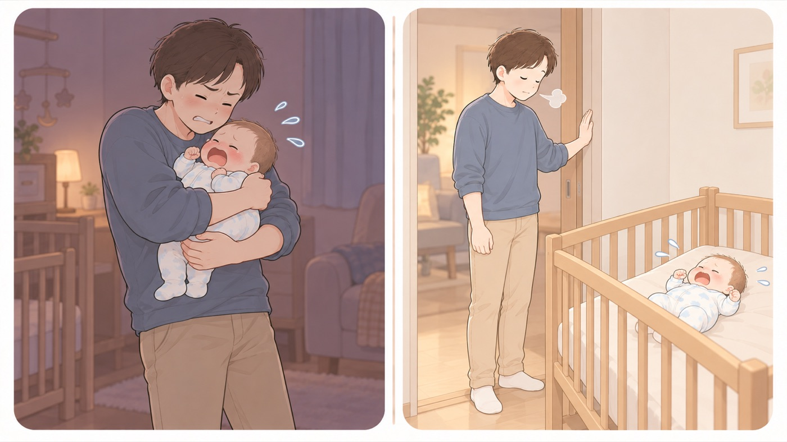

決めておく
泣きやまないときに、どうするか
泣きやまないときにとる行動を、産む前に二人で決めておく。追いつめられてから考えるのでは間に合わない
おむつを替えても、飲ませても、抱いても泣きやまないことがあります。母子健康手帳は、そういうときは深呼吸をする、安全な所に赤ちゃんを寝かせて、その場からいったん離れる、誰かと言葉をかわす、といった方法を挙げています。追いつめられてからでは選べないので、産む前に二人で決めておきます。

左は危険な例、右は安全な例です。- すること：泣きやまないときにとる行動を、産む前に二人で決めておく
母子健康手帳が挙げているのは、深呼吸をする、安全な所に寝かせてその場からいったん離れる、誰かと言葉をかわす、の3つです。このうちどれをとるかを、産む前に話して決めておきます。 - すること：「離れていい」ことを、二人の合意にしておく
赤ちゃんを泣かせたまま離れることに、後ろめたさを感じる人がいます。これは手帳に書かれている方法だと、あらかじめ共有しておきます。 - すること：離れるときは、安全な所に寝かせる
寝床に何も置かず、あおむけで寝かせてから離れます。 - しないこと：怒りを、赤ちゃんに向けない
揺さぶらない、叩かない、口をふさがない、乱暴に置かない。泣きやませようとして激しく揺さぶると、揺さぶられっ子症候群を起こします。赤ちゃんは、親を困らせるために泣いているのではありません。 - すること：心配なことがあれば、かかりつけ医に相談する
泣きやまないことが続くときは、ひとりで抱え込まずに相談します。
なぜ産む前に決めるのか
赤ちゃんを激しく揺さぶると、脳に重い障害が残ったり、亡くなったりすることがあります。 揺さぶってしまうのは、たいていどうしていいか分からなくなったときです。 そのときに考え始めるのでは間に合わないので、 産む前に、二人で同じ行動を決めておきます。
🛍 グッズの選び方
PR- 産後の心の不調を扱った本を1冊、産む前に読んでおくと、気づき方と相談先が先に分かります。
- イライラの対処を具体的に書いた本は、泣きやまない場面そのものに効きます。
- 本は二人で読むと、産後に同じ言葉で話せます。片方だけが読んでも、決めごとは共有できません。
- マンガでわかる！ 産後うつ?と思ったら読む本（立花良之・細川モモ 監修）産後の心の不調を、気づき方と相談先からAmazonで見る →
- 子育てのイライラ・怒りにもう振り回されない本イライラの対処を具体的にAmazonで見る →
- アンガーマネジメント超入門 「怒り」が消える心のトレーニング怒りの扱い方の入門Amazonで見る →
リンクはAmazonアソシエイトリンクです。当サイトはアフィリエイトプログラムに参加しています。Amazonのアソシエイトとして、当サイトは適格販売により収入を得ています。 選び方の方針
この項目の根拠
- 赤ちゃんを揺さぶらないで ─ 乳幼児揺さぶられ症候群（SBS）を予防しましょう（日本小児科学会 監訳・PDF）（新しいタブで開きます）
揺さぶられっ子症候群は、泣きやまない赤ちゃんを前に世話をしている人がいらだち、泣きやませようとして激しく揺さぶったときに起こること。特に子どもが泣きやまないときによく起こること。 - 母子健康手帳 任意様式「新生児（生後約４週間までの赤ちゃん）」（こども家庭庁 母子健康手帳情報支援サイト・PDF）（新しいタブで開きます）
おむつを替えたり、おっぱいを飲ませたり、だっこしたり、静かな環境にしたりなどしても赤ちゃんが泣きやまない時はイライラしてしまいがちであること、そのようなときは深呼吸をしたり、安全な所に赤ちゃんを寝かせてその場からいったん離れたり、誰かと言葉をかわしたりなどして気分転換をしてみること、たいていの赤ちゃんは泣き疲れて眠ってしまうこと、心配な事があればかかりつけ医などに相談すること。